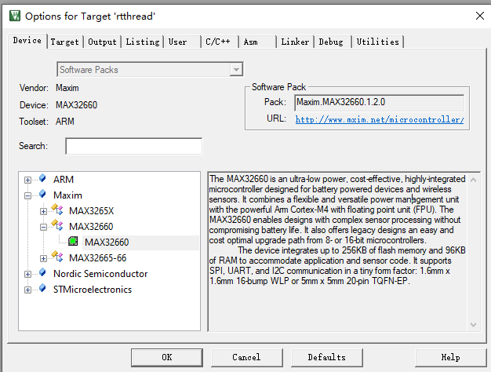
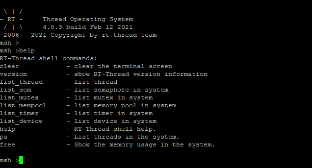

RTTHREAD移植新的芯片BSP开发板
简介
你是否有一款新的开发板或者新的芯片，RTTHREAD Master分支上还没有支持？想要支持RT-THREAD怎么做呢？这篇文章主要讲解的是如何在一颗新的芯片或者平台上上移植rtthread，按照文档的步骤一步一步的来porting，基本上可以慢慢掌握如何把你的新平台或者芯片如何PR到master分支上。
预备资料：
在看本文之前，请先大概过一遍文档中心的内核移植
看完这篇文章，应该有个大概的了解，不需要完全掌握，文档中心的这篇文章是一些很理论的知识点。
没有具体教你怎么一步一步做，下面我这篇文章会大概总结一下，我是怎么一步一步操作的，你也可以根据我这个，如果有更好的方法也可以提供给我。我们可以称之为“RTTHRED“。
移植前准备
本文场景是一颗内核架构已经在RTTHREAD上面支持了，例如MAX32660,这是一颗ARM-M4F的内核，但是这颗芯片RTTHREAD上还没有支持起来。
首先你得先具备熟悉以下两方面，芯片方面和RTTHREAD方面
芯片方面
我们得先熟悉当前芯片的官方服务例程如何跑的，找到具体的sample和一些网上的资料，分以下一些方面
官方服务例程，这边MAX是eclipse，熟悉eclipse
keil pack 里面的服务例程，这个往往大家会忽略，其实有些厂商支持keil pack装好之后里面都有一些服务例程，熟悉keil的朋友用起来会比较方便。网址
对于移植主要了解以下几个例程，Systick(其他定时器也可以，了解一款)，UART(console需要)， GPIO(点亮小灯需要) ，初期把整个框架搭起来，console可以使用，了解这几个例程就可以了，
RTTHREAD方面
rtthread方面有以下文档需要熟悉
首先你要对RTTHREAD用法比较熟悉一些，
官方文档地址：RTTHREAD文档中心
RTTHREAD支持的最好的是STM32系列，如果你有一款STM32的开发板，可以先跑一下熟悉一下。
和本文相关的一些文档下面我先列出来：
移植步骤
这边我讲下我的移植顺序
点亮小灯
官方服务例程里面通常会有GPIO点亮小灯的例程，通常有开GPIO时钟，设置GPIO管脚的功能为输出，然后就可以闪灯了。找到这几步的函数。
熟悉Systick例程
熟悉下Systick服务例程，定时器如何定时的触发，这个通常是CMSIS接口设置的，一般是通用的，不排除有些特殊配置，根据官方给的例程来就好了。
可以编译通过的bsp
这边可以找STM32F4或者L4系列都可以，拷贝到你需要的文件夹下面
对于keil，可以先改下template.uvprojx 文件，把target改成你对应的开发板

改完之后需要修改rtconfig.h来适应一些配置
这边提供一个最小的rtconfig.h来方便下次配置
#ifndef RT_CONFIG_H__
#define RT_CONFIG_H__
/* Automatically generated file; DO NOT EDIT. */
/* RT-Thread Configuration */
/* RT-Thread Kernel */
#define RT_NAME_MAX 8
#define RT_ALIGN_SIZE 4
#define RT_THREAD_PRIORITY_32
#define RT_THREAD_PRIORITY_MAX 32
#define RT_TICK_PER_SECOND 100
#define RT_USING_IDLE_HOOK
#define RT_IDLE_HOOK_LIST_SIZE 4
#define IDLE_THREAD_STACK_SIZE 256
#define RT_USING_TIMER_SOFT
#define RT_TIMER_THREAD_PRIO 4
#define RT_TIMER_THREAD_STACK_SIZE 512
/* Inter-Thread communication */
#define RT_USING_SEMAPHORE
#define RT_USING_MUTEX
/* Memory Management */
#define RT_USING_MEMPOOL
#define RT_USING_SMALL_MEM
#define RT_USING_HEAP
/* Kernel Device Object */
#define RT_USING_DEVICE
#define RT_USING_CONSOLE
#define RT_CONSOLEBUF_SIZE 128
#define RT_CONSOLE_DEVICE_NAME "uart1"
#define RT_VER_NUM 0x40003
/* RT-Thread Components */
#define RT_USING_COMPONENTS_INIT
#define RT_USING_USER_MAIN
#define RT_MAIN_THREAD_STACK_SIZE 2048
#define RT_MAIN_THREAD_PRIORITY 10
/* C++ features */
/* Command shell */
#define RT_USING_FINSH
#define FINSH_THREAD_NAME "tshell"
#define FINSH_USING_HISTORY
#define FINSH_HISTORY_LINES 5
#define FINSH_USING_SYMTAB
#define FINSH_USING_DESCRIPTION
#define FINSH_THREAD_PRIORITY 20
#define FINSH_THREAD_STACK_SIZE 4096
#define FINSH_CMD_SIZE 80
#define FINSH_USING_MSH
#define FINSH_USING_MSH_DEFAULT
#define FINSH_USING_MSH_ONLY
#define FINSH_ARG_MAX 10
/* Device virtual file system */
/* Device Drivers */
#define RT_USING_DEVICE_IPC
#define RT_PIPE_BUFSZ 512
#define RT_USING_SERIAL
#define RT_SERIAL_USING_DMA
#define RT_SERIAL_RB_BUFSZ 64
#define SOC_MAX32660
#define SOC_MAXIM
/* On-chip Peripheral Drivers */
#define BSP_USING_UART
#define BSP_USING_UART1
#endif
最后两个是需要手动添加的，后面可以手动添加。
scons --target=mdk5，然后打开project, 删除所有的和芯片相关的内容，保留RTTHREAD内核相关的内容，编译完成之后，根据GPIO里面的需要的文件，添加到RTTHREAD里面
通常对于ARM CORTEX-M4来讲，需要库里面的两个startup文件即可，
- system_max32660.c 这个是C语言写的SystemInit函数
- startup_max32660.s 这个是汇编写的启动函数
这两个文件基本都是不需要修改的。
剩下的就是一个board.c和application.c
application.c
参考demo
/*
* Copyright (c) 2006-2020, RT-Thread Development Team
*
* SPDX-License-Identifier: Apache-2.0
*
* Change Logs:
* Date Author Notes
* 2020-04-29 supperthomas first version
*
*/
#include <rtthread.h>
#include <rtdevice.h>
int main(void)
{
int count = 1;
while (count++)
{
rt_thread_mdelay(500);
}
return RT_EOK;
}
board.c 参考demo
/*
* Copyright (c) 2006-2020, RT-Thread Development Team
*
* SPDX-License-Identifier: Apache-2.0
*
* Change Logs:
* Date Author Notes
* 2020-04-29 supperthomas first version
*
*/
#include <rtthread.h>
#include <rthw.h>
#include "board.h"
/**
* This is the timer interrupt service routine.
*
*/
void SysTick_Handler(void)
{
/* enter interrupt */
rt_interrupt_enter();
rt_tick_increase();
/* leave interrupt */
rt_interrupt_leave();
}
void rt_hw_systick_init(void)
{
/* enter interrupt */
rt_interrupt_enter();
rt_tick_increase();
/* leave interrupt */
rt_interrupt_leave();
}
void rt_hw_board_init(void)
{
// rt_hw_interrupt_enable(0);
// sd_power_dcdc_mode_set(NRF_POWER_DCDC_ENABLE);
/* Activate deep sleep mode */
rt_hw_systick_init();
//#if defined(RT_USING_HEAP)
// rt_system_heap_init((void *)HEAP_BEGIN, (void *)HEAP_END);
//#endif
//#ifdef RT_USING_SERIAL
// rt_hw_uart_init();
//#endif
//#ifdef RT_USING_CONSOLE
// rt_console_set_device(RT_CONSOLE_DEVICE_NAME);
//#endif
#ifdef RT_USING_COMPONENTS_INIT
rt_components_board_init();
#endif
}
board.h参考demo
/*
* Copyright (c) 2006-2020, RT-Thread Development Team
*
* SPDX-License-Identifier: Apache-2.0
*
* Change Logs:
* Date Author Notes
* 2020-04-29 supperthomas first version
*/
#ifndef _BOARD_H_
#define _BOARD_H_
#include <rtthread.h>
#include <rthw.h>
#if defined(__CC_ARM) || defined(__CLANG_ARM)
extern int Image$$RW_IRAM1$$ZI$$Limit;
#define HEAP_BEGIN ((void *)&Image$$RW_IRAM1$$ZI$$Limit)
#elif __ICCARM__
#pragma section="CSTACK"
#define HEAP_BEGIN (__segment_end("CSTACK"))
#else
extern int __bss_end__;
#define HEAP_BEGIN ((void *)&__bss_end__)
#endif
#define HEAP_END (0x20001000)
void rt_hw_board_init(void);
#endif
上面3个文件都是可以直接编译通过的，根据GPIO例程，添加对应的一些.c文件即可。
这一步保证编译通过即可。
调试systick
systick可以是ARM里面的systick，也可以使用TIMER来代替。
TIMER分两步走，先配置时钟，设置timer的触发tick间隔，然后设置中断服务例程。
这个在官方服务例程中找对应的初始化，放到函数rt_hw_systick_init()中，
这个里面把timer设置成RT_TICK_PER_SECOND即可，这个通常是1000或者100，代表1s， timer起来1000次，1ms一次。
中断服务例程
systick有专门的服务例程SysTick_Handler，根据startup_max32660.s的中断向量表来的，其他TIMER可以找到对应的服务例程。
这边demo中已经写好了，只需要调rt_tick_increase函数即可。
这个时候编译通过，通过DEBUG 断点到main里面的while循环，看是否是0.5s触发一次断点即可。
如果这里调通了证明系统起来就快了。
如果这里调不通，需要整理main的入口等关系问题，
添加小灯GPIO
这个时候就可以点亮一个小灯来看看了。GPIO点亮小灯根据厂商给的demo来设置。无外乎是初始化GPIO然后翻转GPIO。这个时候可以根据厂商的demo来添加相关的文件，可能要添加库文件
添加到main函数里面，看下效果就好了，这一步编译完成之后，可以看到小灯一闪一闪亮晶晶了。这边基本系统已经跑起来了。
添加drv_uart.c
GPIO其实主要方便来看演示效果的，当然rtthread有个非常好的shell系统finsh，这个需要把drv_uart.c support起来就可以用了，当然如果你只用个内核不用finsh的话，也是可以的，但是通常上传到master分支上最好有个finsh功能，方便后面人在你的基础上继续完善其他功能。
这边提供一个可以编译通过的drv_uart.c
/*
* Copyright (c) 2006-2018, RT-Thread Development Team
*
* SPDX-License-Identifier: Apache-2.0
*
* Change Logs:
* Date Author Notes
* 2021-02-08 Supperthomas first version
*/
#include "board.h"
#include "uart.h"
#include "rtdevice.h"
#define UART0_CONFIG \
{ \
.name = "uart0", \
.Instance = MXC_UART_GET_UART(0), \
.irq_type = MXC_UART_GET_IRQ(0), \
}
#define UART1_CONFIG \
{ \
.name = "uart1", \
.Instance = MXC_UART_GET_UART(1), \
.irq_type = MXC_UART_GET_IRQ(1), \
}
struct mcu_uart_config
{
const char *name;
mxc_uart_regs_t *Instance;
IRQn_Type irq_type;
};
struct mcu_uart
{
mxc_uart_regs_t handle;
struct mcu_uart_config *config;
rt_uint16_t uart_dma_flag;
struct rt_serial_device serial;
};
#ifdef RT_USING_SERIAL
//#define DRV_DEBUG
//#define LOG_TAG "drv.usart"
//#include <drv_log.h>
#if !defined(BSP_USING_UART0) && !defined(BSP_USING_UART1)
#error "Please define at least one BSP_USING_UARTx"
/* this driver can be disabled at menuconfig -> RT-Thread Components -> Device Drivers */
#endif
enum
{
#ifdef BSP_USING_UART0
UART0_INDEX,
#endif
#ifdef BSP_USING_UART1
UART1_INDEX,
#endif
};
static struct mcu_uart_config uart_config[] =
{
#ifdef BSP_USING_UART0
UART0_CONFIG,
#endif
#ifdef BSP_USING_UART1
UART1_CONFIG,
#endif
};
static struct mcu_uart uart_obj[sizeof(uart_config) / sizeof(uart_config[0])] = {0};
static rt_err_t mcu_configure(struct rt_serial_device *serial, struct serial_configure *cfg)
{
struct mcu_uart *uart;
RT_ASSERT(serial != RT_NULL);
RT_ASSERT(cfg != RT_NULL);
return RT_EOK;
}
static rt_err_t mcu_control(struct rt_serial_device *serial, int cmd, void *arg)
{
struct mcu_uart *uart;
RT_ASSERT(serial != RT_NULL);
uart = rt_container_of(serial, struct mcu_uart, serial);
switch (cmd)
{
/* disable interrupt */
case RT_DEVICE_CTRL_CLR_INT:
/* disable rx irq */
NVIC_DisableIRQ(uart->config->irq_type);
/* disable interrupt */
break;
/* enable interrupt */
case RT_DEVICE_CTRL_SET_INT:
/* enable rx irq */
/* enable interrupt */
break;
case RT_DEVICE_CTRL_CLOSE:
break;
}
return RT_EOK;
}
static int mcu_putc(struct rt_serial_device *serial, char c)
{
struct mcu_uart *uart;
RT_ASSERT(serial != RT_NULL);
uart = rt_container_of(serial, struct mcu_uart, serial);
//uart->handle.Instance->DR = c;
return 1;
}
static int mcu_getc(struct rt_serial_device *serial)
{
int ch;
struct mcu_uart *uart;
RT_ASSERT(serial != RT_NULL);
uart = rt_container_of(serial, struct mcu_uart, serial);
ch = -1;
//if (__HAL_UART_GET_FLAG(&(uart->handle), UART_FLAG_RXNE) != RESET)
// {
// ch = uart->handle.Instance->DR & 0xff;
// }
return ch;
}
static const struct rt_uart_ops mcu_uart_ops =
{
.configure = mcu_configure,
.control = mcu_control,
.putc = mcu_putc,
.getc = mcu_getc,
};
int rt_hw_usart_init(void)
{
rt_size_t obj_num = sizeof(uart_obj) / sizeof(struct mcu_uart);
struct serial_configure config = RT_SERIAL_CONFIG_DEFAULT;
rt_err_t result = 0;
for (int i = 0; i < obj_num; i++)
{
/* init UART object */
uart_obj[i].config = &uart_config[i];
uart_obj[i].serial.ops = &mcu_uart_ops;
uart_obj[i].serial.config = config;
/* register UART device */
result = rt_hw_serial_register(&uart_obj[i].serial, uart_obj[i].config->name,
RT_DEVICE_FLAG_RDWR
| RT_DEVICE_FLAG_INT_RX
| RT_DEVICE_FLAG_INT_TX
| uart_obj[i].uart_dma_flag
, NULL);
RT_ASSERT(result == RT_EOK);
}
return result;
}
//INIT_BOARD_EXPORT(rt_hw_usart_init);
#endif /* RT_USING_SERIAL */
这边简单讲解一下这些函数作用，你就大概知道如何支持uart了。
rt_hw_uart_init
rt_hw_usart_init 这个函数在rt_hw_board_init里面systick初始化之后会调用
然后调用rt_console_set_device来设置console，这里是通过名称来关联的。
rt_hw_usart_init 这个函数并不负责初始化uart串口，只是把下面的uart的所有操作注册进去，
static const struct rt_uart_ops mcu_uart_ops =
{
.configure = mcu_configure,
.control = mcu_control,
.putc = mcu_putc,
.getc = mcu_getc,
};
putc和getc
这个比较好理解，就是你的uart驱动发送一个字节，和接收一个字节
这边通常是读取一个字节和发送一个字节的寄存器即可。这边不会涉及到中断等
mcu_configure
这个函数主要初始化uart寄存器，设置波特率等一些静态的参数
mcu_control
这里负责打开中断，开始接受串口数据
中断服务例程
中断服务例程需要通知rtthread去掉getc取数据
这边需要知道中断如何清中断，并且掉rt_hw_serial_isr函数来通知来取数据
void UART1_IRQHandler(void)
{
rt_interrupt_enter();
rt_hw_serial_isr(&(uart_obj[UART1_INDEX].serial), RT_SERIAL_EVENT_RX_IND);
uint32_t intst = 0;
intst = MXC_UART1->int_fl;
MXC_UART1->int_fl = intst;
rt_interrupt_leave();
}
这边可以先支持putc就是UART TX，先看到串口有数据发出来就可以了。之后比较难的就是UART RX了。
这部分要根据官方例程做一些实验，我这边是要知道UART 的IDLE中断什么时候触发，或者一些其他FIFO满中断如何触发。然后设置对应的寄存器即可。
UART调通之后，会看到串口可以打印响应的信息了

能达到这个效果就不错了，可以做很多事情了。
这边调好一个UART之后，可以试着调另外一个UART。把这个放到对应的.c里面即可或者放到application.c里面即可，我们通过命令来测试下即可，这边需要将UART TX RX两个引脚对连起来。
#include <rtthread.h>
// you can connect the uart tx with rx
#define SAMPLE_UART_NAME "uart0" /* ?????? */
#define UART_DATA_TEST_SIZE 10
static struct rt_semaphore rx_sem;
static rt_device_t serial;
static char tx_data[UART_DATA_TEST_SIZE];
static char rx_data[UART_DATA_TEST_SIZE];
static rt_err_t uart_input(rt_device_t dev, rt_size_t size)
{
rt_sem_release(&rx_sem);
return RT_EOK;
}
static void serial_thread_entry(void *parameter)
{
char ch;
int index=0;
while (1)
{
while (rt_device_read(serial, -1, &ch, 1) != 1)
{
rt_sem_take(&rx_sem, RT_WAITING_FOREVER);
}
rx_data[index++] = ch;
rt_kprintf("\r\n transmit data:%x\r\n",ch);
if(index >=UART_DATA_TEST_SIZE)
{
rt_kprintf("\r\n transmit done\r\n");
index = 0;
break;
}
}
}
static int uart_sample(int argc, char *argv[])
{
rt_err_t ret = RT_EOK;
char uart_name[RT_NAME_MAX];
for(int i = 0;i< UART_DATA_TEST_SIZE;i++)
{
tx_data[i] = i;
}
if (argc == 2)
{
rt_strncpy(uart_name, argv[1], RT_NAME_MAX);
}
else
{
rt_strncpy(uart_name, SAMPLE_UART_NAME, RT_NAME_MAX);
}
serial = rt_device_find(uart_name);
if (!serial)
{
rt_kprintf("find %s failed!\n", uart_name);
return RT_ERROR;
}
rt_sem_init(&rx_sem, "rx_sem", 0, RT_IPC_FLAG_FIFO);
rt_device_open(serial, RT_DEVICE_FLAG_INT_RX);
rt_device_set_rx_indicate(serial, uart_input);
rt_device_write(serial, 0, tx_data, UART_DATA_TEST_SIZE);
rt_thread_t thread = rt_thread_create("serial", serial_thread_entry, RT_NULL, 1024, 25, 10);
if (thread != RT_NULL)
{
rt_thread_startup(thread);
}
else
{
ret = RT_ERROR;
}
return ret;
}
MSH_CMD_EXPORT(uart_sample, uart device sample);
PR工程
PR工程是个比较浩大的工程，需要了解bsp里面的每一个细节：
这边你可以学一下scons如何使用的来对对应的文件进行修改：SCons 构建工具
以及Kconfig语法：Kconfig 语法
Kconfig
Kconfig主要用来生成#define头文件，主要服务于rtconfig.h的，所以如果你之前手动在rtconfig.h里添加的宏定义如果想做的比较好的话，需要在对应的Kconfig里面添加。这个主要看你需要menuconfig在哪个目录下面，通常是bsp目录下面的Kconfig索引到其他的例如board/Kconfig
通常在board/Kconfig里面需要添加一些模块UART和GPIO
主要是改board/Kconfig
scons
这个就比较复杂了，耗时也比较多。
首先在你scons的目录下，通常bsp目录下面
SConstruct
这个文件是用来包含一些其他文件夹中的SConscript的
SConscript
所有你需要单独包含的文件夹，都需要用SConscript这个文件来索引该目录下面的需要的配置文件，
board下面的SConscript需要重点维护，其他如果官方的HAL库需要对应的文件，也是需要修改的。
rtconfig.py
这个文件用来修改编译器相关的一些配置，和选项的，这部分比较复杂一些，可以学习一下一些编译选项
link_scripts
这个文件夹里面主要存放的是link相关的一些配置，比如RAM地址和ROM地址
大概需要修改的就是这些文件，其他可能还有比较多，主要的离不开这几个，有些参数可以放到template里面现行设置，后期等找到合适的方式再继续整理。